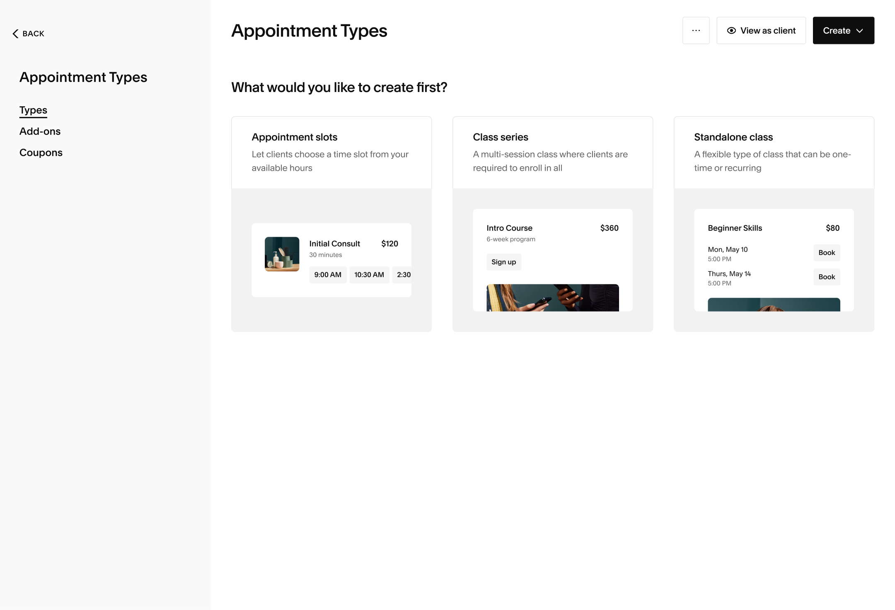

Leveraging an AI-forward development process, I led the evolution of Acuity Scheduling beyond 1:1 appointments, bringing in a new era of class scheduling and tapping into an underserved market.
Interim PM
20x more classes are being created since the launch
Acuity, Squarespace's scheduling platform, was originally built for 1:1 appointments. Class support was added later and haphazardly, forcing admins to create classes the same way they'd do appointments—without the ability to scale and knowing what their calendar looks like.

Admins don't get to see their schedule at the time of creating their classes
This was a pattern copied directly from appointment creation, where appointments are determined by availability which is set up elsewhere. Meanwhile, class times are determined by an admin, but they sometimes need more calendar context for those decisions.
It's not clear to an admin when to set up a class vs. an appointment
The two are not distinguished well enough in the experience, with admins creating a class/appointment instead of the other.
Lack of class customization and functionality to support scaling
Admins aren't able to bulk edit recurring sessions in a class. Instead, they'd have to go into each individual instance to make updates.
Even though Acuity is mainly appointments-based, there was a huge market to be captured for classes. We had a small amount of class businesses on the platform, but many of them were churning due to our poor class support.
Fitness studios, yoga instructors, and educators were left with an experience that was cobbled together and not designed around their class-based workflows. These people were leaving in droves, but over the years, left a lot of customer support tickets pinpointing the pains of running their classes on our platform.
I met with current class-based users to learn about how they run their business on Acuity, what types of classes they offer, and what frustrations they have with the product.
There were a few patterns that validated or challenged our assumptions:
Classes are offered as one of two types: a one-off session or part of a "bootcamp"
Bootcamps are popular for education-based businesses, where clients are enrolled in a set of sessions once they book. One-offs were also popular, where clients can join sessions that are flexible and required less commitment.
Admins thought to go to their calendar to set up their classes
This pathway felt more natural because they'd be working off of a calendar and specific time blocks, but you can't do that today. You can only create classes from a form on the appointment types landing page.
Squarespace had just begun rolling out AI tools to internal teams. With traditional processes being challenged by AI, I experimented a bit and built an elaborate prototype with Claude Code. This vision concept excited Leadership, and was greenlit to be our team initiative for the year.
While this vision prototype was spun up in just a few days, it was informed by months of user research and countless customer support stories. It was also the first time we started the product development process this way. Using AI tools accelerated the discovery process. It got prototypes in front of users quickly for testing and exposed edge cases early. I even built proprietary tools like a commenting system in the prototype, and closed all the documentation and collaboration gaps to visualize and execute towards the end goal and the in-betweens needed to get there.
However, engineers struggled to use the prototype as the source of truth because it wasn't connected to our design system MCP, which was still in development. This led to style discrepancies between design and build. The decision: move everything to Figma.
While it wasn't the most efficient approach, it was the one that unblocked development. I ended up creating Figma screens of the Claude prototype to help engineers feel more comfortable. Despite the setback, nothing in the designs changed.

Surfacing Series vs. Standalone Classes upfront
In the old flow, the distinction wasn't clear and it was possible to flip flop between the two after having created a class. This opened up payment issues downstream. In my proposal, we have strong convictions that these two class offerings are entirely different from one another and not interchangeable.
Class creation with the user's mental model in mind
Admins can now create classes and/or add sessions to existing classes from their calendar in addition to the appointment types page, so they'll never be without context.
Flexible customization of classes and their sessions
Changes made at the class level will propagate into their sessions, with individual session overrides. There's also more customization for recurring classes, like a class schedule that happens multiple days a week.
Complex scheduling scenarios that made our heads spin
With most of the detailing and polishing already done during concepting, it was time to tackle the hard stuff: bug bash feedback and complex edge cases. It wasn't until we got everyone's undivided attention and extreme focus in testing, that we started realizing the tricky scenarios that come with recurring schedules. We came up with the following recommendations for mindbending problems:
What happens if an admin edits an existing schedule for a series, resulting in a new amount of occurrences?
Past occurrences cannot be changed, future occurrences with enrollments should be protected, and empty future occurrences should be dropped.
Can an admin add a new session to a series that already has attendees?
We block any type of scheudle change that results in a new session being added, if there are already attendees.
We underestimated the complexity of migrating existing class users with many sessions. Can we neatly group their existing sessions into schedules?
Automatically group like-sessions into a schedule for "migrated" users
In the old experience, there wasn't a level above "class" where admins can control definitions that can propagate to sessions. We introduced a parent-child hierarchy and would group those sessions together into a schedule upon the user's first exposure to the new class experience.
Things we left off the table for now
There were a lot of niceties that were included in the original Claude prototype that we had to descope because we were behind on schedule. It was important to deliver something useful quickly, and iteratively.
Delightful calendar interactions
We decided to forego calendar interactions and just have classes be created from the Create button. This is a surface that the Appointments Team jointly owns and we felt that the amount of work couldn't justify releasing this later.
Dedicated class management UX
The original designs contained additional workflows where admins can dive into a session of a class and view an attendee roster in a separate screen. The amount of effort to make this happen would have set us back even more. Plus, we already have a workaround using the current UI for this.
We launched to 100% of new users first. The next week, we rolled it out to 10% of existing users, and then eventually to 100% of existing users the following week. Since the new classes launch, there has been a 20x increase in class creation.
Class creation became simpler, faster, and more intuitive, with all the mechanisms in place to scale sessions. The initiative was met with mostly positive reactions, including customers reaching out to express how happy they were to finally see features they've wanted for a long time. There was feedback around hiding past sessions and schedules, which we already anticipated and had designs for in our back pockets. We tackled small improvements along the way as fast follows, eventually building up to the end vision and making a marketing buzz.